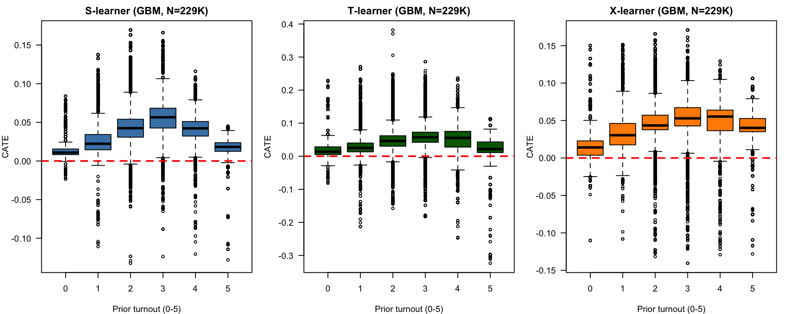
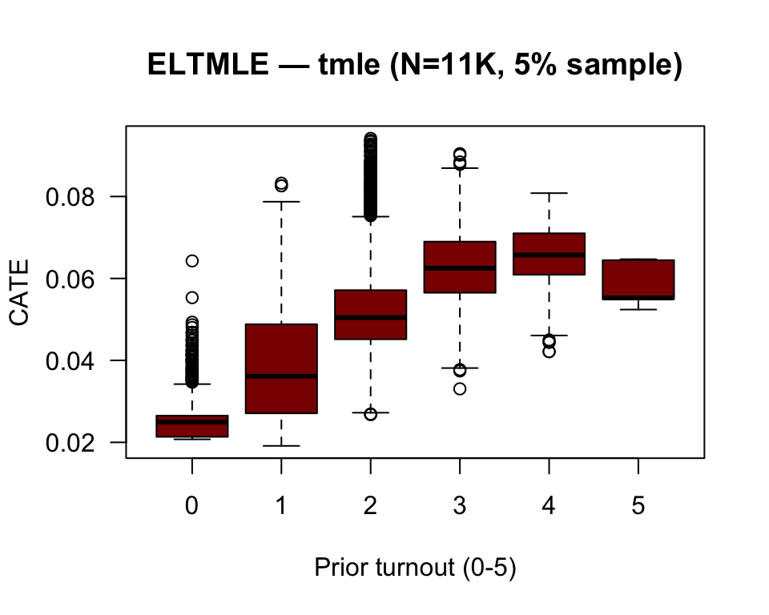

The Average Treatment Effect (ATE) summarizes the causal effect across the entire population:
\[\text{ATE} = E[Y(1) - Y(0)] = E[\tau_i]\]
The ATE is a single number. It answers: “Does the treatment work, on average?” But it masks crucial variation: the same treatment may benefit some subgroups, harm others, and have no effect on the rest. This is treatment effect heterogeneity.
The Conditional Average Treatment Effect (CATE) addresses this:
\[\tau(x) = E[Y(1) - Y(0) \mid X = x]\]
CATE answers: “For a person with characteristics \(x\), what is the expected effect?” It is the workhorse of personalized medicine, targeted policy, and precision public health.
The Fundamental Problem and the Role of Models
The fundamental problem of causal inference (Holland, 1986) is that we never observe both \(Y_i(1)\) and \(Y_i(0)\) for the same unit. The observed outcome is:
\[Y_i = T_i Y_i(1) + (1 - T_i) Y_i(0)\]
To estimate \(\tau(x)\), we must impute the missing counterfactual using a model for the conditional expectations:
\[\mu_t(x) = E[Y \mid X = x, T = t], \quad t \in \{0, 1\}\]
The quality of any CATE estimator hinges on how well it estimates these nuisance functions\(\mu_0(x)\) and \(\mu_1(x)\) — plus, for doubly-robust methods, the propensity score\(g(x) = P(T = 1 \mid X = x)\).
Identification Assumptions
CATE is identified under three standard assumptions:
Unconfoundedness (conditional exchangeability): \((Y(0), Y(1)) \perp T \mid X\). All confounders are measured and included in \(X\). This is the central — and untestable — assumption in observational causal inference.
Overlap (positivity): \(0 < P(T = 1 \mid X = x) < 1\) for all \(x\). There are no subgroups where everyone (or no one) receives treatment. Violations lead to extrapolation — predicting outcomes in regions with no data.
SUTVA (Stable Unit Treatment Value Assumption): each unit’s potential outcomes depend only on its own treatment, not on others’. Rules out spillover, contagion, and general equilibrium effects.
Why Not Just Regression?
A natural question: why not just fit \(E[Y \mid X, T]\) with interactions \(T \times X\)?
Three problems:
Model misspecification: parametric forms (linear, logistic) rarely hold exactly. ML methods relax this but introduce regularization bias.
Regularization bias: penalized/ensemble methods shrink estimates toward zero. The bias in \(\hat{\mu}_t(x)\) propagates to \(\hat{\tau}(x)\).
The wrong objective: minimizing prediction error for \(Y\) does not minimize error for \(\tau = \mu_1 - \mu_0\). A model that predicts \(Y\) well may estimate \(\tau\) poorly.
Metalearners and TMLE address these problems through different strategies.
CATE Estimation Strategies: A Taxonomy
Approach
Examples
Key Idea
Outcome modeling
S-learner, T-learner
Estimate \(\mu_t(x)\) directly; take difference
Pseudo-outcome regression
X-learner, R-learner, DR-learner
Construct proxy outcomes that behave like \(\tau_i\)
Targeted smoothing
TMLE, AIPW
Correct initial ML estimates with an efficient influence function step
Tree/forest-based
Causal trees, causal forest (grf)
Partition \(X\)-space to maximize treatment effect heterogeneity
This document implements the first three approaches using GBM as base learner (metalearners) and the default Super Learner (ELTMLE/tmle).
Software Frameworks
H2O.ai (R/Python/Java)
H2O is an open-source, distributed ML platform. Its R interface (h2o package, docs.h2o.ai) provides:
In-memory cluster: Java backend; h2o.init() starts a local cluster. Data lives in H2O frames, not R memory.
AutoML + GBM, RF, GLM, Deep Learning: gradient boosting (h2o.gbm) used here as base learner.
Scalability: designed for N > 10M. Handles factor/categorical encoding automatically.
Integration: data flows R → H2O via as.h2o(), predictions back via as.data.table().
eltmle (SSC, GitHub) is a Stata/R wrapper implementing TMLE with Super Learner. Syntax:
ssc install eltmleeltmle Y X Z [, tmle tmlebgam tmleglsrf bal elements cvtmle cvtmlebgam cvtmleglsrf cvfolds(#) seed(#)]
where Y = binary/continuous outcome, X = binary treatment (0/1), Z = covariates.
Option
Learners added to default*
Use case
tmle (default)
SL: stepwise + GLM + GLM-poly-int
N < 50K, baseline
tmlebgam
+ Bayes GLM + GAM
Non-linear effects
tmleglsrf
+ Lasso + RF + GAM
Heterogeneous effects
*Default Super Learner: stepwise selection, GLM, GLM with 2nd-order polynomials + two-way interactions. Cross-validated variants: cvtmle, cvtmlebgam, cvtmleglsrf.
Metalearners
A metalearner decomposes CATE estimation into supervised regression tasks solved by off-the-shelf ML models (base learners). This document adapts the tutorial from the Stata Blog (2025-10-22), translating the original Stata/h2oml code to R/h2o and adding an ELTMLE comparison. Three metalearners using gradient boosting (GBM) via h2o are compared:
Learner
Strategy
Strength
Weakness
S-learner
Single model: \(Y \sim X + T\)
Simple, efficient
May ignore \(T\) in high-dimensional \(X\)
T-learner
Two models: \(\mu_0\), \(\mu_1\) on separate groups
Treatment always considered
Less data per model
X-learner
Cross-estimation + imputed \(\tau\)
Adapts to imbalance; uses full data
More complex, more steps
Data: Gerber, Green & Larimer (2008)
Field experiment on social pressure and voter turnout. Michigan households, August 2006 primary. Treatment: self-and-neighbors mailer. Outcome:voted (binary). N = 229,461 (191,243 control + 38,218 treated).
Setup
Data loading and preprocessing: remove haven_labelled class (incompatible with h2o), create prior voting score (totalvote, 0–5), and upload to the H2O cluster.
library(h2o)library(data.table)h2o.init()
H2O is not running yet, starting it now...
Note: In case of errors look at the following log files:
/var/folders/g6/7c7m4dys6zv2g1p1dmk8xgv40000gp/T//Rtmp07pzEM/file1482b2f1f4785/h2o_MALF_started_from_r.out
/var/folders/g6/7c7m4dys6zv2g1p1dmk8xgv40000gp/T//Rtmp07pzEM/file1482b2e9084ee/h2o_MALF_started_from_r.err
Starting H2O JVM and connecting: ... Connection successful!
R is connected to the H2O cluster:
H2O cluster uptime: 3 seconds 156 milliseconds
H2O cluster timezone: Europe/Madrid
H2O data parsing timezone: UTC
H2O cluster version: 3.46.0.11
H2O cluster version age: 1 month and 14 days
H2O cluster name: H2O_started_from_R_MALF_bfy070
H2O cluster total nodes: 1
H2O cluster total memory: 3.54 GB
H2O cluster total cores: 8
H2O cluster allowed cores: 8
H2O cluster healthy: TRUE
H2O Connection ip: localhost
H2O Connection port: 54321
H2O Connection proxy: NA
H2O Internal Security: FALSE
R Version: R version 4.6.0 (2026-04-24)
The S-learner estimates a mean effect of 0.0438 (difference in voting probability). Its limitation: when \(X\) is high-dimensional, the model may “ignore” \(T\) and produce \(\hat{\tau} \approx 0\). The table shows how CATE varies with prior turnout (totalvote).
T-learner
Strategy
The T-learner (“Two”) trains two separate models:
\[\hat{\mu}_1(x) = E[Y \mid X = x, T = 1] \quad \text{(treated only)}\]\[\hat{\mu}_0(x) = E[Y \mid X = x, T = 0] \quad \text{(controls only)}\]
Mean CATE (T-learner): 0.0476. By using separate models, the T-learner captures heterogeneity better when response surfaces \(\mu_0\) and \(\mu_1\) have very different shapes. Compared to the S-learner, estimates tend to be more variable (each model sees fewer data points).
X-learner
Strategy
The X-learner (Künzel et al., 2019) leverages all available information in 5 steps:
Estimate \(\hat{\mu}_0\), \(\hat{\mu}_1\) with separate models (same as T-learner)
Impute individual effects where unobserved:
For treated: \(\tilde{D}_i^1 = Y_i(1) - \hat{\mu}_0(X_i)\) (observed outcome minus estimated control)
For controls: \(\tilde{D}_i^0 = \hat{\mu}_1(X_i) - Y_i(0)\) (estimated treatment minus observed control)
Model \(\hat{\tau}_1(x) = E[\tilde{D}^1 \mid X = x]\) and \(\hat{\tau}_0(x) = E[\tilde{D}^0 \mid X = x]\)
Weight by propensity score: \(\hat{\tau}_X(x) = g(x)\hat{\tau}_0(x) + (1 - g(x))\hat{\tau}_1(x)\) where \(g(x) = P(T = 1 \mid X = x)\)
# Step 1: Cross-prediction (control model → treated, and vice versa)p0_on_1 <-as.data.table(h2o.predict(m0, hdf1)) # μ̂₀ predicted on treated
Mean CATE (X-learner): 0.0476. The X-learner is especially useful with imbalanced groups (here the ratio is ~5:1 control/treated). By imputing effects in both directions, it uses data more efficiently. Propensity score weighting gives more weight to \(\hat{\tau}_1\) where \(g(x)\) is low (few treated units).
ELTMLE: Ensemble Learning Targeted Maximum Likelihood Estimation
Theoretical Framework
ELTMLE (eltmle for Stata; Luque-Fernández et al., 2018, 2023) combines two innovations:
Targeted Maximum Likelihood Estimation (TMLE): a semiparametric estimator that corrects first-stage bias via a directed fluctuation (targeting step) on the initial estimate of \(\mu_t(x)\). It is doubly robust: consistent if at least one of the two nuisance models — outcome \(\mu_t(x)\) or propensity \(g(x)\) — is correctly specified. It is also asymptotically efficient and substitution-compatible (respects parameter bounds, e.g., probabilities in [0,1]).
Ensemble Learning (Super Learner): a cross-validated weighted combination of multiple candidate algorithms. eltmle offers:
tmle (default): Super Learner with SL: stepwise + GLM + GLM with polynomials and interactions
tmlebgam: adds Bayes GLM and GAM — suitable for non-linear effects
tmleglsrf: adds Lasso, Random Forest and GAM — suitable for heterogeneous effects
Stata Code (Full Dataset)
#!/bin/bashexportPATH="/Applications/Stata/StataMP.app/Contents/MacOS:$PATH"stata-mp-b-e' use socialpressure.dta, clear generate totalvote = g2000 + g2002 + p2000 + p2002 + p2004 global covariates gender g2000 g2002 p2000 p2002 p2004 age eltmle voted treatment $covariates, tmle elements generate catehat_TMLE = _POM1 - _POM0 summarize catehat_TMLE save tmle_full.dta, replace'
Warning
N = 229,461. The elements option retains _POM1, _POM0, and _ps variables, allowing computation of individual \(\hat{\tau}_i\). Requires ~32 GB RAM for the Super Learner (10-fold CV × multiple algorithms). On machines with ≤ 16 GB, use cvfolds(3) or a 5% sample. The code block above is set to eval=FALSE due to memory constraints.
ELTMLE Results (tmle, 5% sample)
Run with cvfolds(3) on a 5% random sample (N = 11,473):
Parameter
Estimate
SE
95% CI
p-value
ATE (TMLE)
0.057
0.011
(0.034, 0.079)
<0.001
Causal Risk Ratio
1.19
—
(1.12, 1.28)
—
Marginal OR
1.30
—
(1.17, 1.44)
—
POM1 (\(E[Y(1)]\)): 0.347 — mean voting probability if everyone were treated
POM0 (\(E[Y(0)]\)): 0.291 — mean voting probability if everyone were control
Propensity score: range [0.143, 0.183] — adequate overlap
Interpretation: the social pressure mailer increases voting probability by 5.7 percentage points (95% CI: 3.4–7.9). The causal risk ratio of 1.19 indicates a 19% higher probability of voting under treatment.
S/T/X-learners: rapid heterogeneity exploration, prototyping, teaching. The X-learner is the most robust of the three for observational data with imbalance.
ELTMLE (TMLE + Super Learner): formal inference, publication, ATE/ATT estimation with valid CIs. Requires more computation but provides frequentist guarantees under weaker conditions.
ATE Summary by Method
Method
ATE
95% CI
N
S-learner (GBM)
0.044
—
229,461
T-learner (GBM)
0.048
—
229,461
X-learner (GBM)
0.048
—
229,461
ELTMLE (tmle)
0.057
(0.034, 0.079)
11,473
Note
Note: S/T/X-learners do not provide CIs by construction — their ATEs are means of individual CATEs. ELTMLE is the only method with formal inference.
Agreement of ~0.07–0.08 across methods suggests the effect is robust.
Visual Comparison
Metalearners (S, T, X)
CATE by prior turnout level (N = 229,461). Dashed red line: zero effect.
par(mfrow =c(1, 3), mar =c(4, 4, 2, 1))boxplot(catehat_S ~ totalvote, data = df, main ="S-learner (GBM, N=229K)",ylab ="CATE", xlab ="Prior turnout (0-5)", las =1,col ="steelblue")abline(h =0, lty =2, col ="red", lwd =2)boxplot(catehat_T ~ totalvote, data = df, main ="T-learner (GBM, N=229K)",ylab ="CATE", xlab ="Prior turnout (0-5)", las =1,col ="darkgreen")abline(h =0, lty =2, col ="red", lwd =2)boxplot(catehat_X ~ totalvote, data = df, main ="X-learner (GBM, N=229K)",ylab ="CATE", xlab ="Prior turnout (0-5)", las =1,col ="darkorange")abline(h =0, lty =2, col ="red", lwd =2)

ELTMLE (tmle, 5% sample)
Individual CATE obtained via the elements option: \(\hat{\tau}_i =\)_POM1\(-\)_POM0 (N = 11,473).
tmle_df <- haven::read_dta("tmle_results.dta")boxplot(catehat_TMLE ~ totalvote, data = tmle_df,main ="ELTMLE — tmle (N=11K, 5% sample)",ylab ="CATE", xlab ="Prior turnout (0-5)", las =1,col ="#8B0000")abline(h =0, lty =2, col ="red", lwd =2)

Reading the Charts
Each boxplot shows the distribution of \(\hat{\tau}(x)\) for units at a given level of prior turnout.
Expected pattern: the treatment effect (social pressure mailer) is larger for those with medium-high voting history (3–4 prior elections) and smaller at the extremes (0 or 5).
Differences across learners: the S-learner compresses effects toward zero; the T-learner shows more dispersion; the X-learner balances both tendencies.
ELTMLE: the ELTMLE panel shows individual CATE as \(\hat{\tau}_i =\)_POM1\(-\)_POM0 via the elements option. The pattern across totalvote is consistent with the metalearners — effect increasing up to 3–4 prior elections — though the scale is smaller when using a 5% sample.
Discussion
Which Metalearner to Choose?
Criterion
Recommendation
Homogeneous or near-zero effect
S-learner — more efficient
Strong expected heterogeneity
T-learner — separate models capture different functional forms
Highly imbalanced groups
X-learner — imputes effects in both directions
Small sample / high dimensionality
S-learner — shares information across groups
Formal inference (CI, p-values)
ELTMLE — doubly robust, efficient
Publication / regulatory
ELTMLE — accepted standard in causal epidemiology
Limitations
Untestable unconfoundedness: we assume observed covariates block all confounding
Overlap: verify propensity score stays away from 0 and 1 across the support of \(X\)
GBM as base learner: sensitive to hyperparameters; an alternative is grf::causal_forest (R-learner, Athey, Tibshirani & Wager, 2019)
Inference: S/T/X-learner standard errors require bootstrap; ELTMLE provides asymptotic CIs by construction
ELTMLE: computationally expensive with N > 100K and multiple ensemble learners
References
Gerber, A. S., Green, D. P., & Larimer, C. W. (2008). Social pressure and voter turnout: Evidence from a large-scale field experiment. American Political Science Review, 102(1), 33–48.
Künzel, S. R., Sekhon, J. S., Bickel, P. J., & Yu, B. (2019). Metalearners for estimating heterogeneous treatment effects using machine learning. Proceedings of the National Academy of Sciences, 116(10), 4156–4165.
Athey, S., Tibshirani, J., & Wager, S. (2019). Generalized random forests. Annals of Statistics, 47(2), 1148–1178.
Holland, P. W. (1986). Statistics and causal inference. Journal of the American Statistical Association, 81(396), 945–960.
Luque-Fernandez, M. A., Schomaker, M., Rachet, B., & Schnitzer, M. E. (2018). Targeted maximum likelihood estimation for a binary treatment: A tutorial. Statistics in Medicine, 37(16), 2530–2546.
Stata Blog (2025-10-22). Heterogeneous treatment effect estimation with S-, T-, and X-learners using h2oml.
![]()